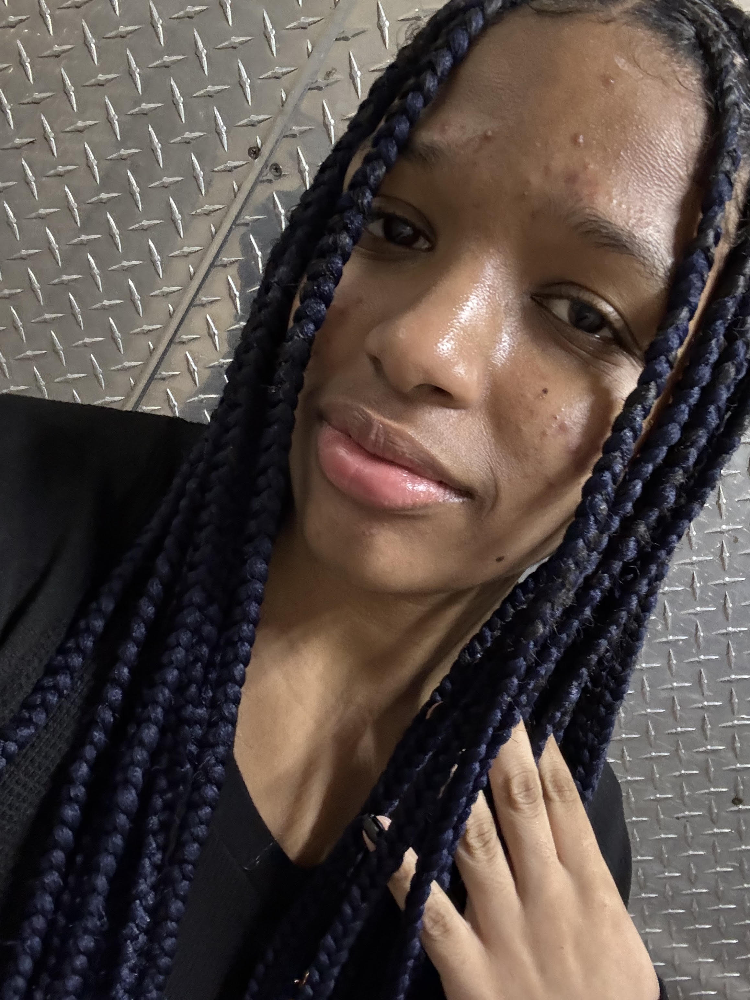

Aspiring computer forensic investigator with a passion for uncovering digital clues, solving complex puzzles, and following every lead to the truth. Full-stack development has had an immense impact on my career path, deepening my understanding of both front-end and back-end technologies. Without FSD (Full-Stack Development), would unravel a hole in my heart.


I'm Meya, a George Westinghouse Scholar with a strong passion for computer science. My love for coding began in middle school when I was introduced to programming languages in my tech class. A turning point came when I witnessed a robot in the FIRST Robotics Championship capable of having full conversations, which deepened my interest in coding and artificial intelligence. Since then, I've been actively involved in my school's robotics team, constantly striving to improve my coding skills and push myself toward excellence.